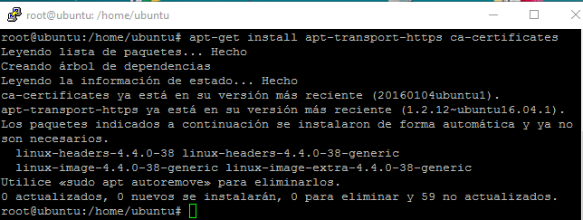
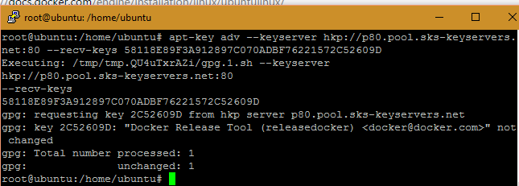
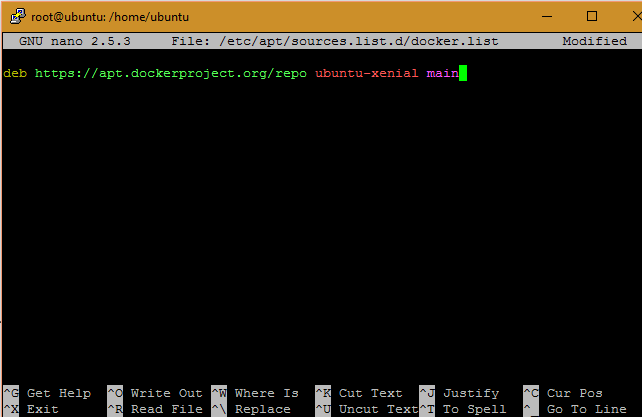
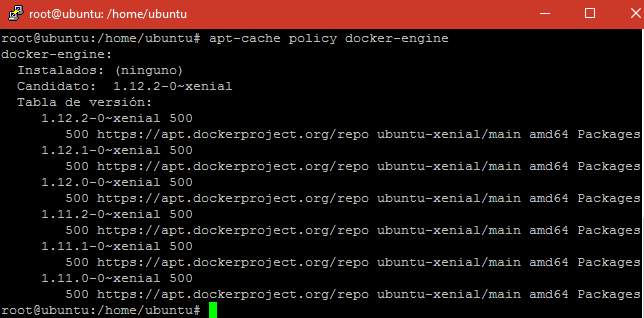
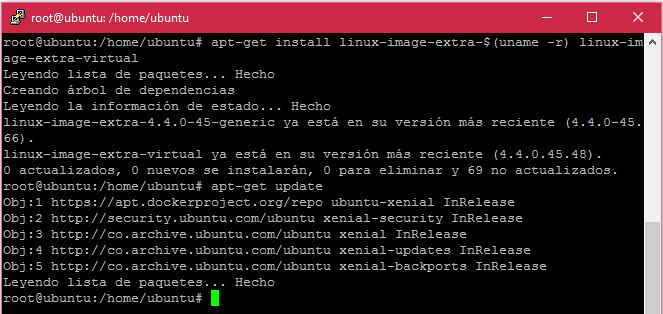
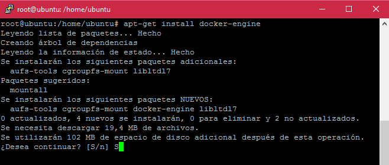
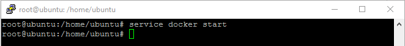
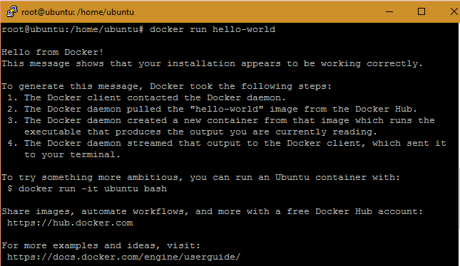
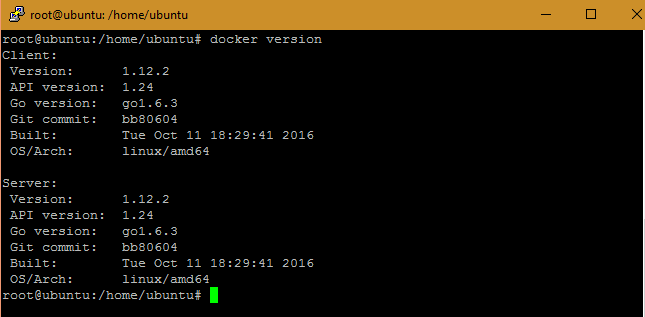

Para la instalación de dockers en el sistema operativo de Ubuntu server se deben tener en cuenta los siguientes requerimientos:
$ uname -r
1. Nos aseguramos de estar como Súper usuario para acceder a todos los privilegios, además debe estar actualizado el sistema.
$ sudo su
# apt-get update
2. Instalamos los certificados CA de raíz de confianza de inspección HTTPS a los equipos clientes, mediante la siguiente línea de comando.
# apt-get install apt-transport-https ca-certificates

3. Añadimos una nueva clave GPG, lo cual nos permite cifrar y firmar digitalmente nuestra información.
# apt-key adv --keyserver hkp://p80.pool.sks-keyservers.net:80 --recv-keys 58118E89F3A912897C070ADBF76221572C52609D

4. Accedemos a la ruta /etc/apt/sources.list.d/docker.list y agregamos el repositorio en el cual vamos a buscar los paquetes. Luego de agregar el repositorio no olvide realizar un # update para actualizar los mismos.
deb https://apt.dockerproject.org/repo ubuntu-xenial main

5. Verificamos mediante el comando # apt-cache policy docker-engine si APT este descargado del repositorio correcto de docker, esto de acuerdo a la versión de sistema operativo que maneje en su computadora.

6. Para evitar inconvenientes al momento de la instalación de dockers se recomienda instalar paquetes extras para el kernel, esto mediante el comando.
# apt-get install linux-image-extra-$(uname -r) linux-image-extra-virtual
# apt-get install linux-image-generic-lts-trusty
Luego actualizamos nuevamente el sistema.

7. Instalamos Docker mediante el comando # apt-get install docker-engine.

8. Ahora mediante el comando # service docker start Inicializamos los servicios de docker para su correcto funcionamiento.

9. Por ultimo verificamos la correcta instalación de dockers corriendo una imagen de prueba mediante el comando docker run más en nombre de la imagen.
# docker run hello-world

10. También mediante el comando # docker versión podemos observar la versión de dockers instalada en nuestra máquina.
